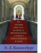

Из архива миссис Базиль Э. Франквайлер, самого запутанного в мире

Эмма знала: классический побег из дома - не для нее. Поэтому она и решила убежать не "откуда", а "куда" - в удобное, просторное, теплое, а главное, красивое место. Так Эмма и ее брат Джимми поселились в знаменитом музее изобразительных искусств Метрополитен в Нью-Йорке - как раз в тот момент, когда в музее появилась таинственная скульптура неизвестного мастера Возрождения... Для среднего школьного возраста.